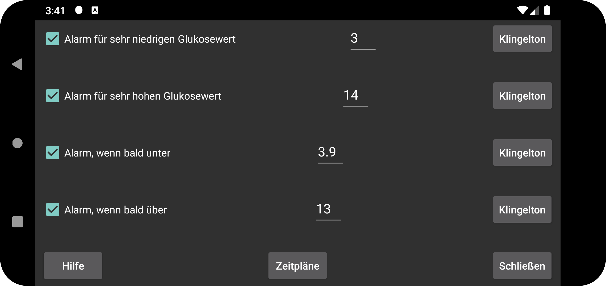

Ein zweiter Alarm wird ausgelöst, wenn der Glukosewert niedriger ist als der Alarm für niedrigen Glukosewert.
Ein zweiter Alarm wird ausgelöst, wenn der Glukosewert höher ist als der Alarm für hohen Glukosewert.
Alarm, wenn der Blutzuckerwert bald unter einen bestimmten Wert sinkt.
Alarm, wenn der Blutzuckerspiegel bald einen bestimmten Wert überschreitet.
Planen Sie ein bestimmtes Profil so, dass es zu einer bestimmten Tageszeit aktiv wird. So können Sie tagsüber und nachts andere Glukoseschwellenwerte oder Klingeltöne verwenden oder die Ansage der Glukosewerte nachts automatisch deaktivieren.